using UnfoldMakie
using CairoMakieThere are dozens of standard and arbitrary ways to set electrodes. UnfoldMakie bundles predefined 23 montages with their labels and channel positions.
list_montages()23-element Vector{String}:
"EGI_256"
"GSN-HydroCel-128"
"GSN-HydroCel-129"
"GSN-HydroCel-256"
"GSN-HydroCel-257"
"GSN-HydroCel-32"
"GSN-HydroCel-64_1.0"
"GSN-HydroCel-65_1.0"
"artinis-brite23"
"artinis-octamon"
⋮
"brainproducts-RNP-BA-128"
"colin27_1005"
"colin27_1020"
"easycap-M1"
"easycap-M10"
"mgh60"
"mgh70"
"standard_1005"
"standard_1020"23 montage types
Montage groups and plotting helper
This demonstration groups related montages and creates a separate figure for each group. The helper adapts the figure and label sizes to the group and montage sizes.
function plot_montage_group(group_title, montage_names; ncols = 2)
nrows = cld(length(montage_names), ncols)
f = Figure(size = (600 * ncols, 450 * nrows))
for (i, mname) in enumerate(montage_names)
row = (i - 1) ÷ ncols + 1
col = (i - 1) % ncols + 1
montage = get_montage(mname)
nchannels = length(montage.labels)
fontsize = clamp(120 / sqrt(nchannels), 5, 12)
ax = Axis(f[row, col]; title = mname, aspect = DataAspect())
scatter!(ax, montage.positions; markersize = max(3, fontsize / 2))
text!(
ax,
montage.labels,
position = montage.positions,
align = (:center, :center),
fontsize = fontsize,
)
hidedecorations!(ax)
hidespines!(ax)
end
Label(f[0, 1:ncols], group_title; fontsize = 24)
f
endplot_montage_group (generic function with 1 method)Each variable below represents one montage family.
biosemi = ["biosemi16", "biosemi32", "biosemi64", "biosemi128"]
gsn_hydrocel = [
"GSN-HydroCel-32",
"GSN-HydroCel-64_1.0",
"GSN-HydroCel-65_1.0",
"GSN-HydroCel-128",
"GSN-HydroCel-129",
"GSN-HydroCel-256",
"GSN-HydroCel-257",
]
standard = ["standard_1020", "standard_1005"]
colin27 = ["colin27_1020", "colin27_1005"]
mgh = ["mgh60", "mgh70"]
artinis = ["artinis-octamon", "artinis-brite23"]
easycap = ["easycap-M1", "easycap-M10"]
brainproducts = ["brainproducts-RNP-BA-128"]
egi = ["EGI_256"]1-element Vector{String}:
"EGI_256"BioSemi montages
plot_montage_group("BioSemi", biosemi)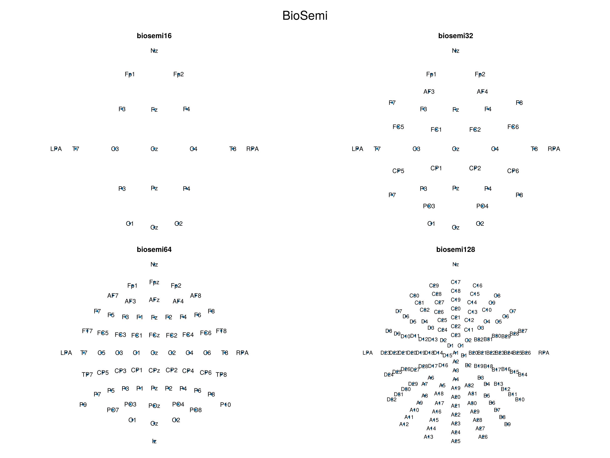
GSN HydroCel montages
plot_montage_group("GSN HydroCel", gsn_hydrocel)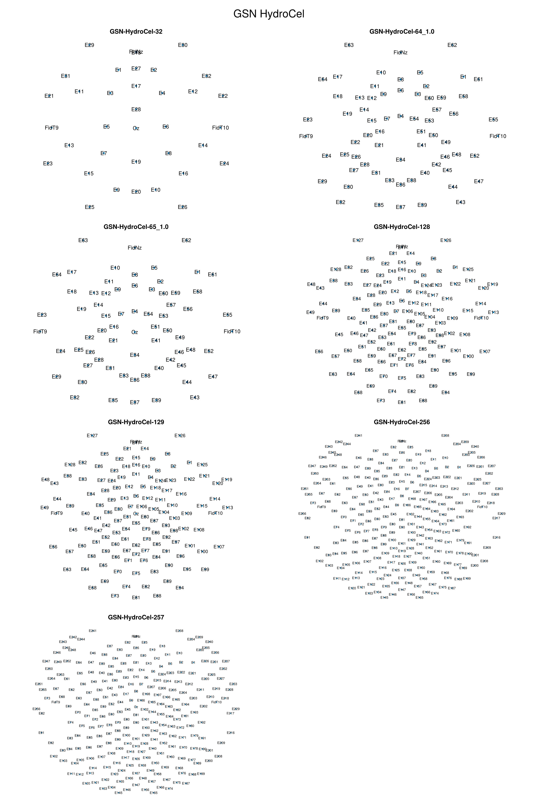
Standard EEG montages
plot_montage_group("Standard EEG", standard)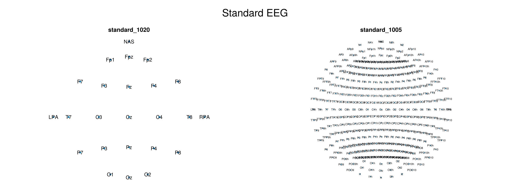
Colin27 montages
plot_montage_group("Colin27", colin27)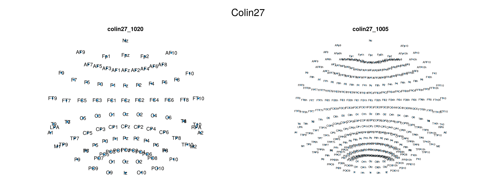
MGH montages
plot_montage_group("MGH", mgh)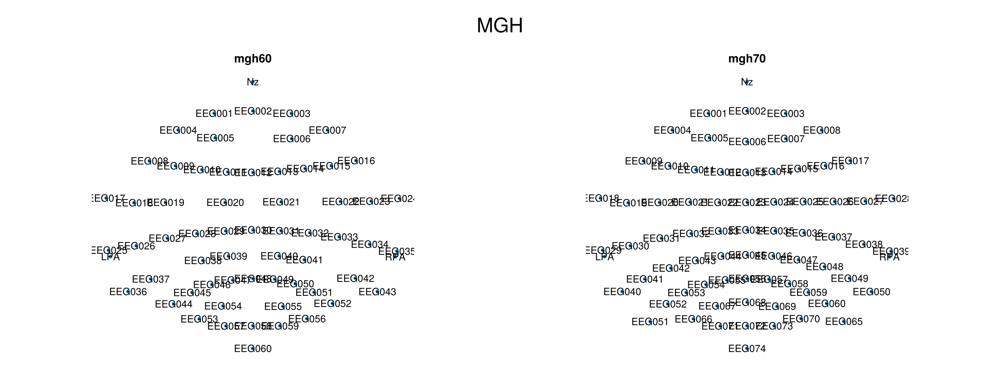
Artinis montages
plot_montage_group("Artinis", artinis)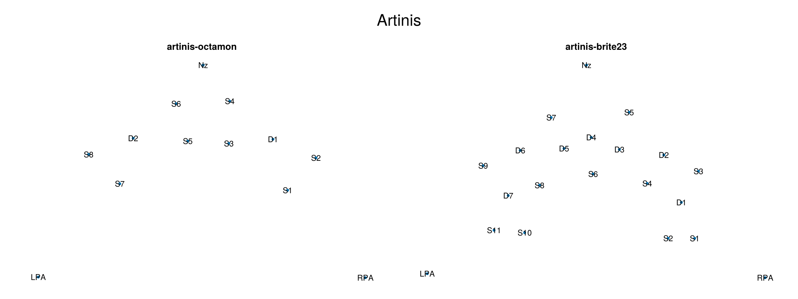
EasyCap montages
plot_montage_group("EasyCap", easycap)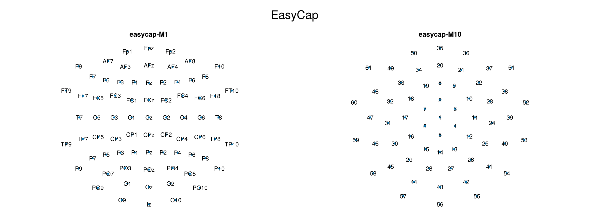
Brain Products montage
plot_montage_group("Brain Products", brainproducts)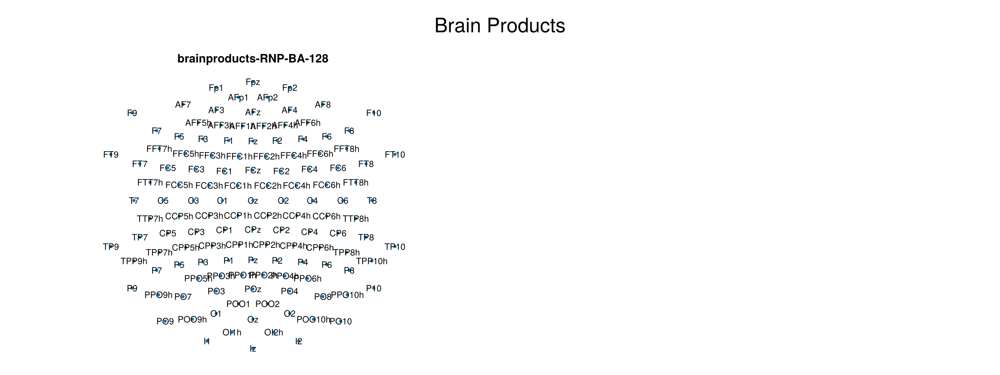
EGI montage
plot_montage_group("EGI", egi)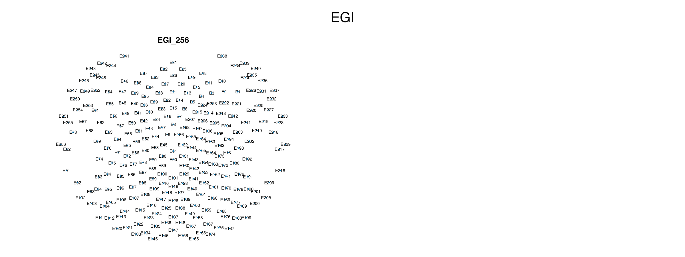
Use a montage in a topoplot
get_montage returns labels and positions in the same channel order. The data vector passed to plot_topoplot must follow that order as well. Here we use a simple synthetic left-to-right gradient for the BioSemi 16 montage.
montage = get_montage("biosemi16")
values = first.(montage.positions) # could be any vector of length 16
plot_topoplot(
values;
positions = montage.positions,
labels = montage.labels,
axis = (; title = "BioSemi 16", xlabel = "Time window"),
visual = (; label_text = true),
)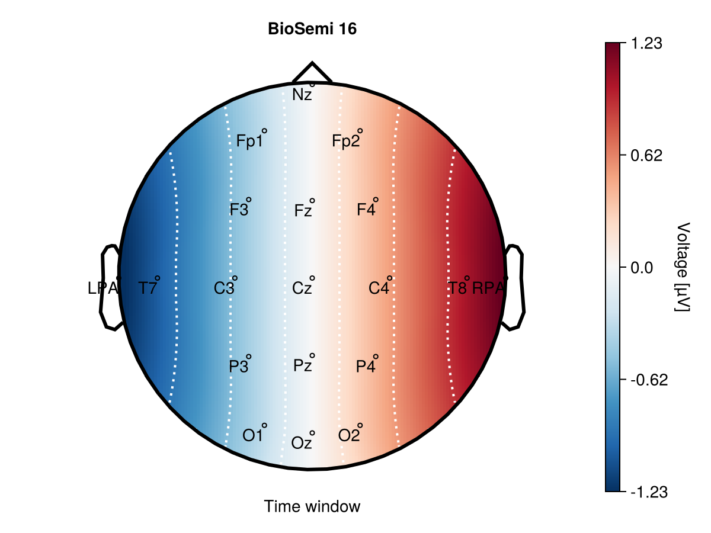
Use a subset of standard positions
When a dataset contains only some channels, standard_positions retrieves their positions from a bundled montage. Matching is case-insensitive, and the returned positions follow the order of selected_labels.
selected_labels = ["Fp1", "Fp2", "F3", "F4", "Fz", "C3", "C4", "Cz",
"P3", "P4", "Pz", "O1", "O2", "Oz", "T7", "T8"]
selected_positions = standard_positions(selected_labels, "standard_1020")
selected_values = collect(range(-1, 1; length = length(selected_labels)))
plot_topoplot(
selected_values;
positions = selected_positions,
labels = selected_labels,
axis = (; title = "Selected 10-20 channels"),
visual = (; label_text = true),
)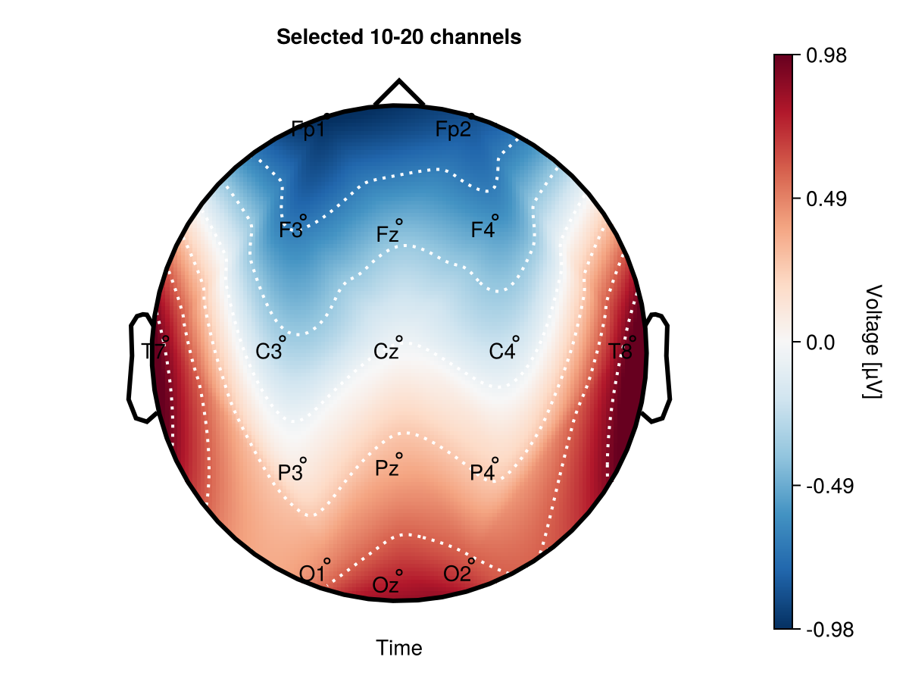
Use a custom montage
A montage does not have to be bundled with UnfoldMakie. If electrode locations are available as 3D Cartesian coordinates, to_positions projects them onto the 2D layout used by plot_topoplot. The input matrix must have three rows (x, y, and z) and one column per channel. Its columns, custom_labels, and custom_values must all use the same channel order.
custom_labels = ["F1", "F2", "C1", "C2", "P1", "P2", "FC1", "FC2"]
custom_positions_3d = [
-0.5 0.5 -0.7 0.7 -0.5 0.5 -0.3 0.3
0.7 0.7 0.0 0.0 -0.7 -0.7 0.3 0.3
0.5 0.5 0.7 0.7 0.5 0.5 0.9 0.9
]3×8 Matrix{Float64}:
-0.5 0.5 -0.7 0.7 -0.5 0.5 -0.3 0.3
0.7 0.7 0.0 0.0 -0.7 -0.7 0.3 0.3
0.5 0.5 0.7 0.7 0.5 0.5 0.9 0.9to_positions can modify its input while translating the sphere origin, so use copy when the original 3D coordinates need to be retained.
custom_positions_2d = to_positions(copy(custom_positions_3d))
custom_values = [-0.8, -0.4, 0.2, 0.6, -0.2, 0.1, 0.7, 1.0]
plot_topoplot(
custom_values;
positions = custom_positions_2d,
labels = custom_labels,
axis = (; title = "Custom montage"),
visual = (; label_text = true),
)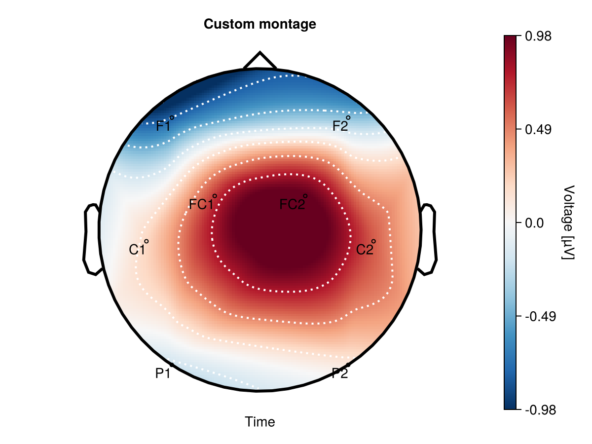
Use a montage in a topoplot series
montage = get_montage("biosemi128")
montage_data = [
x * cos(2π * time / 100) for x in first.(montage.positions), time in 1:100
]
montage_df = eeg_array_to_dataframe(montage_data, montage.labels);Plot one time point to verify the BioSemi 128 electrode and label positions.
plot_topoplotseries(
montage_df;
bin_num = 4, nrows = 2,
positions = montage.positions,
labels = montage.labels,
axis = (; xlabel = "Time windows [s]"),
visual = (; label_text = (; align = (:center, :center))),
)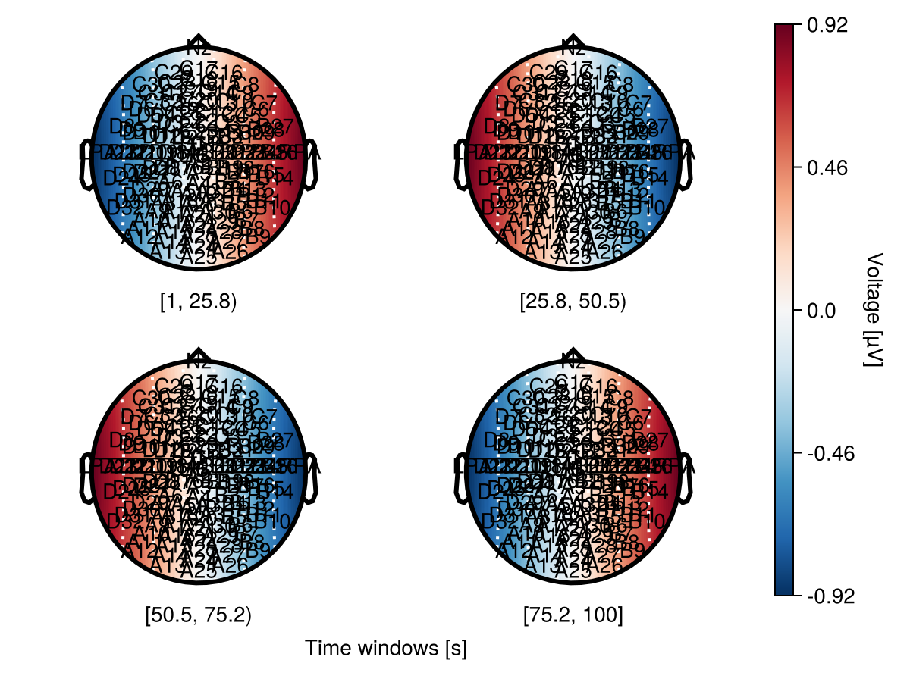
For larger montages, center-align the channel labels to place each label directly on its electrode position. This will help to avoids a systematic lower-left offset. Use visual = (; label_text = (; align = (:center, :center))).
This page was generated using Literate.jl.